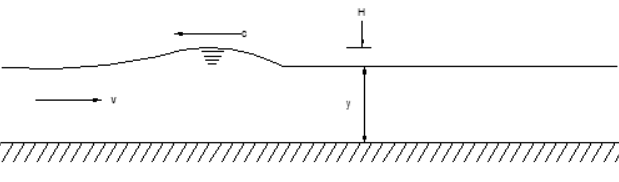
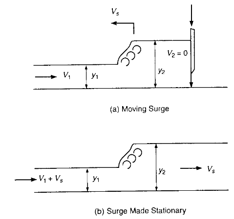
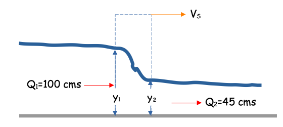

Surges#
The sudden changes of flow in open channel results in the increase or decrease of flow depth is called a “surge” in open channel. The phenomenon occurs when there is a breaching of dams from say an earthquake or regulating the overflow/underflow sluice gates, which results in positive and negative surges in downstream river channel or in downstream tail channel of hydropower projects. The phenomenon also occurs to some extent when there is flooding (unsteady flow) in channels and the hydrograph significantly varies as the rainfall inputs change. The flood wave speed generated during the positive or negative surges is called the celerity (wave velocity).
The analysis of surge waves matters in the design of canals, especially for the hydropower & irrigation projects they play a vital role for the design of the canals. The design depth of the flow in the canals during the surges must be able to accommodate the required discharge accumulated during the propagation of the surges in downstream or upstream of the canals. Typically the designer specifies enough free board in the canals to accommodate the additional height of the surges in addition to the normal depth of the canal flow.
Definitions#
A sketch of typical surge wave is

The positive or negative surge travels downstream or upstream depending on the situation. The increase in flow depth would become the crest of the surges and the decrease in the flow depth would become the trough of the surges.
The phenomenon is an unsteady flow situation, but in many practical instances can be analyzed as a steady flow situation by switching from an inertial fixed reference frame (Euler), to a moving reference frame (LaGrange) fixed on some part of the surge wave. With the moving reference frame, the surge appears as a standing wave (like a hydraulic jump).

The speed of the wave is related to the depth of flow and the velocity \(c=\sqrt{gy} \pm V\)
A continunity across the surge (CV moving at the surge velocity) is
Solving for the surge velocity, (setting \(V_2 =0\))
The momentum balance for the same situation is
For a rectangular channel, the areas \(A_i\) can be replaced with the flow depths \(y_i\) to obtain equations identical to the book.
Example#
A rectangular tailrace channel of hydropower project, \(15~m\) wide having bed slope \(0.0002\) and manning roughness coefficient of \(n= 0.017\) conveys a steady discharge of \(45~\frac{m^3}{s}\) from the hydropower installation. A power increase results from a sudden increase in flow to the turbines to \(100~\frac{m^3}{s}\).
Estimate the depth and celerity of the resulting surge wave in the tailrace channel.

In this example, \(V_2\) is associated with the \(45~\frac{m^3}{s}\) flow and \(V_1\) is associated with the \(100~\frac{m^3}{s}\)
First apply Manning’s equation to the \(Q_2\) side of the tailrace, a safe bet being that before the change on output power that channel had already equilibrated to the flow and would be running at normal depth.
#
Snot = 0.0002
B = 15.0
n = 0.017
Qtarget = 45.0
def Qm(B,Y,N,S):
Qm = (1/N)*(B*Y)*((B*Y/(B+2*Y))**(2/3))*S**(1/2)
return(Qm)
#yguess = 2.5 #trial-n-error
#yguess = 2.45 #trial-n-error
#yguess = 2.40 #trial-n-error
#yguess = 2.41 #trial-n-error
#yguess = 2.415 #trial-n-error
yguess = 2.414 #trial-n-error
print("Discharge :",round(Qm(B,yguess,n,Snot),3)," m^3/s")
print("Velocity : ",round(Qm(B,yguess,n,Snot)/(B*yguess),3)," m/s")
Discharge : 45.005 m^3/s
Velocity : 1.243 m/s
So now we have the downstream depth value and velocity
Apply equation 3.16 in the book (or the above equations for rectangular channel). Notice the sign change because relative velocities on upstream side appear to add to the moving observer and subtract on the downstream side (this is a negative surge)
Now substitute the velocity representation
We can solve for \(V_S\)
So thats one equation, two unknowns - next use momentum in the same way. First momentum for the (moving) CV.
Next substitute known values
Divide by specific weight
Now either solve the two simultaneously, or substitute \(V_S\) into momentum.
A trial-and-error approach is:
# Guess Vs each equation, find the y values. Stop when all satisfied.
def VS(y1,y2,V1,V2):
VS = (V1*y1-V2*y2)/(y2-y1)
return(VS)
Q1 = 100
Q2 = 45
y1 = 2.945 #<<<< Guess This Value
y2 = 2.414
B = 15
V1 = Q1/(y1*B)
V2 = Q2/(y2*B)
g = 9.81
print("y1 :",y1," y2 :",y2)
print("V1 :",round(V1,3)," V2 :",round(V2,3))
Vs = VS(y1,y2,V1,V2)
print("Wave speed :",round(Vs,3)," m/s") # <<<< Get this value
def C1(y1,y2,V1,V2,VS,B):
C1 = (V1+VS)*(y1*B) - (V2+VS)*(y2*B)
return(C1)
print("Continunity Error :",round(C1(y1,y2,V1,V2,Vs,B),3))
def M1(y1,y2,V1,V2,VS,Q1,Q2,B,g):
M1 = (B/2)*(y1**2)+(Q1/g)*(V1+VS) - ((B/2)*(y2**2)+(Q2/g)*(V2+VS))
return(M1)
print("Momentum Error :",round(M1(y1,y2,V1,V2,Vs,Q1,Q2,B,g),3))
y1 : 2.945 y2 : 2.414
V1 : 2.264 V2 : 1.243
Wave speed : -6.905 m/s
Continunity Error : 0.0
Momentum Error : 0.003
So for the case depicted the wave speed is \(-6 m/s\) (a negative surge), and the upstream flow depth is \(2.95~m\) so if this is a typical power change, we would want the tail race to have the ability to convey the flow without overtopping.
Example 3.2 (from Book)#
Steady flow in a rectangular channel with velocity \(1 m/s\) and depth \(3.0 m\) is stopped suddenly by a sluice gate (or landslide!) closure. What are the height and speed of the upstream surge?
Here we just reuse code:
def VS(y1,y2,V1,V2):
VS = (V1*y1-V2*y2)/(y2-y1)
return(VS)
y1 = 3.0
y2 = 3.578 # <<<< Guess this value
B = 1
Q1 = y1*B
Q2 = 0.0 # <<< Given
V1 = Q1/(y1*B)
V2 = Q2/(y2*B)
g = 9.81
print("y1 :",y1," y2 :",y2)
print("V1 :",round(V1,3)," V2 :",round(V2,3))
Vs = VS(y1,y2,V1,V2)
print("Wave speed :",round(Vs,3)," m/s") # <<<< Get this value
def C1(y1,y2,V1,V2,VS,B):
C1 = (V1+VS)*(y1*B) - (V2+VS)*(y2*B)
return(C1)
print("Continunity Error :",round(C1(y1,y2,V1,V2,Vs,B),3))
def M1(y1,y2,V1,V2,VS,Q1,Q2,B,g):
M1 = (B/2)*(y1**2)+(Q1/g)*(V1+VS) - ((B/2)*(y2**2)+(Q2/g)*(V2+VS))
return(M1)
print("Momentum Error :",round(M1(y1,y2,V1,V2,Vs,Q1,Q2,B,g),3))
y1 : 3.0 y2 : 3.578
V1 : 1.0 V2 : 0.0
Wave speed : 5.19 m/s
Continunity Error : 0.0
Momentum Error : -0.008
The answer agrees with the values in the textbook!